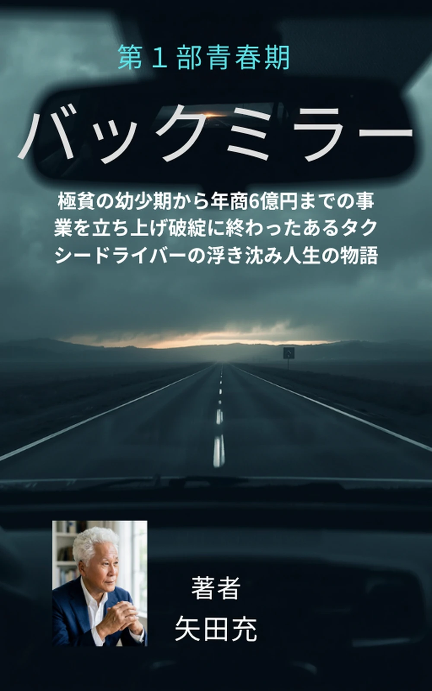
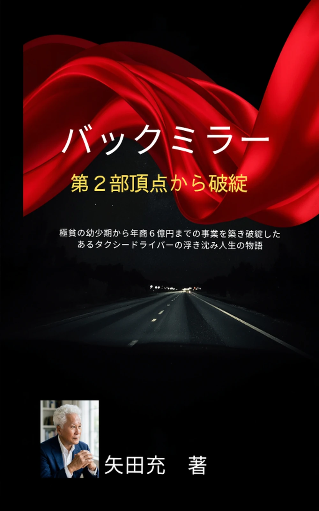
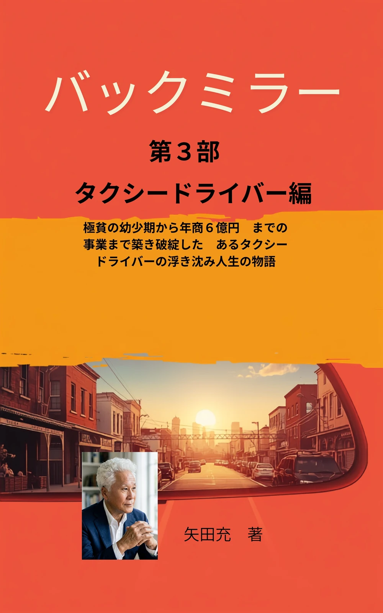

NOTE · 有料記事 01
成功した行動、失敗を招いた思い込み。
うまくいったとき、何をしたか。
つまずいたとき、何を思い込んでいたか。
行動と思い込み、ふたつの視点から自分の歩みを見つめる記事です。
過去の経験を振り返り、これからの一歩を考えたい方へ。
700円
noteで記事を読む —購入リンクは準備中です
MITSURU USHIROKAGAMI · OFFICIAL WEBSITE
後鏡ミツルの気まぐれ運気
行動と思い込みを、あらためて見つめる。
少し立ち止まって、言葉と出会う時間を。
遠回りの先にも、きっと。
01 — A LITTLE DETOURWORDS FOR YOUR EVERYDAY
あなたのペースで、ページをめくって。
NOTE · 有料記事 01
うまくいったとき、何をしたか。
つまずいたとき、何を思い込んでいたか。
行動と思い込み、ふたつの視点から自分の歩みを見つめる記事です。
過去の経験を振り返り、これからの一歩を考えたい方へ。
700円
noteで記事を読む —購入リンクは準備中です
KINDLE · 電子書籍 02
極貧の幼少期から、年商6億円の事業、そして破綻へ。
あるタクシードライバーの浮き沈み人生の物語。
著者・矢田充の歩みを、三部作でお届けします。
Kindle Edition

正式表紙を準備中第1部 · 青春期
BACK MIRROR · VOL. 01
購入リンクは準備中です

正式表紙を準備中第2部 · 頂点から破綻
BACK MIRROR · VOL. 02
購入リンクは準備中です

正式表紙を準備中第3部 · タクシードライバー編
BACK MIRROR · VOL. 03
購入リンクは準備中です
TAKE YOUR TIME.
後鏡ミツルの気まぐれ運気
作品をもう一度見る ↑